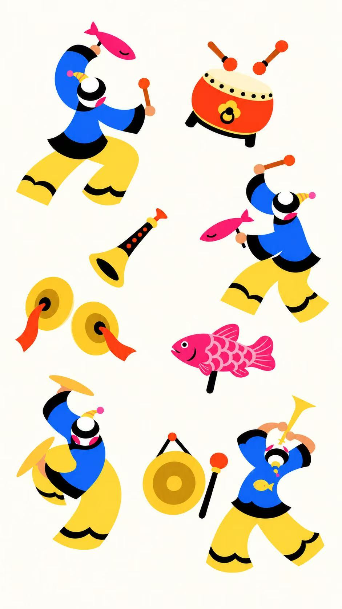

温岭非遗 · DA ZOU GU
大奏鼓
·

开始游戏
跟着节奏，敲响石塘
碰线点击
唢呐长按
三次机会
SCORE / 得分
00000
热身 · 108 BPM
0
COMBO
跟着拍点来
×1
咚！锵！让每一拍都响亮。
−1
次机会
漏拍了 · 剩余 2 次
准备好了吗
3
方块碰线时，点击方块
01
02
03
04
歇一拍，再开锣
歇一拍，接着奏。
准备好了吗？热闹还在等你。
当前得分
0
当前连击
0
继续演奏
返回首页
↗
本场演奏结束
收官！
完美的演奏！
三次失误 · 下场再接再厉
本场得分 / SCORE
0
继续敲出新节奏
最高连击
0
COMBO
命中音符
0
个
再敲一场
返回首页
↗